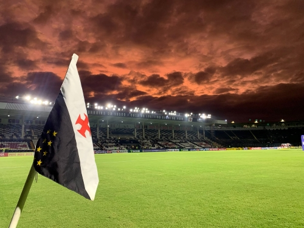

Sobre a Barbearia Cortes do Casimiro
Localizada no templo histórico do futebol a Barbearia Cortes do Casimiro traz para o mercado o que há de melhor para o seu cabelo e barba. Fundada em 2022, a Barbearia já tem mais notas de repúdio que o Atlético Mineiro, mais Copas do Brasil que o São Paulo, só não temos o mundial assim como o Palmeiras...
Nossa missão é: "Proporcionar auto-estima e qualidade de vida principalmente ao torcedor vascaíno, que vem sofrendo nos últimos anos.".
Oferecemos profissionais experientes e antenados às mudanças no mundo da moda. O atendimento possui padrão de excelência e agilidade, garantindo qualidade e satisfação dos nossos clientes, assim como o Dinizismo, futebol apresentado pelo Fluminense em 2022.
Nosso estabelecimento
Ficamos localizado no templo histórico do futebol nacional, mais conhecido como São Januário.
Benefícios
- Aceitas Pix
- Qualidade absurda, tá?
- Sem papinho
- Metemos essa